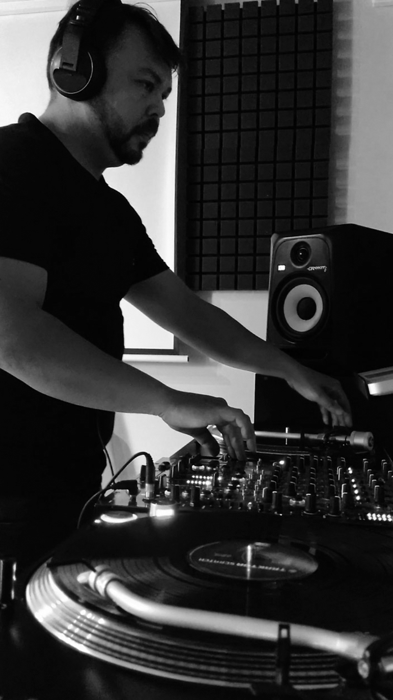

Responsable, dinámico, con aspiraciones, deseos de superación y metas basadas en el logro de objetivos, de rápido aprendizaje, puntual a la hora de presentarse en los eventos, honesto y responsable. Sus conocimientos, de géneros musicales de varias generaciones lo llevan a que pueda adaptarse a cualquier tipo de acontecimiento. Su experiencia desde el año 2017, lo lleva a posicionarse al nivel de los mejores djs del NEA, dejando su huella en los mejores bares y paradores de la Provincia de Corrientes.-